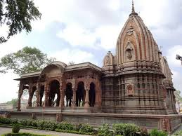

About Krishnapura Chhatris
Krishnapura Chhatris is a group of cenotaphs located on the banks of the Khan River, dedicated to the Holkar rulers of Indore. Built in the 19th century, these elegant structures are renowned for their architectural beauty and historical significance. Each chhatri is intricately carved and adorned with domes, pillars, and ornamental details, reflecting the artistic prowess of the craftsmen of that era. Krishnapura Chhatris serves as a memorial to the Holkar rulers and is a peaceful retreat where visitors can admire the architectural splendor and pay homage to the erstwhile rulers of Indore.